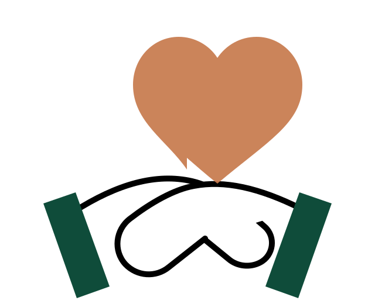

Ambulante Pflege
Unterstützung und Versorgung im vertrauten häuslichen Umfeld.
CN – Der Pflegedienst begleitet Menschen in Frankfurt mit ambulanter Pflege, Grundpflege, Betreuung und hauswirtschaftlicher Versorgung. Persönlich erreichbar in Sachsenhausen.
Ein digitaler Auftritt, der Angehörigen Orientierung gibt und den persönlichen Kontakt so einfach wie möglich macht.

Die Leistungsdarstellung bleibt bewusst klar und basiert nur auf öffentlich belegbaren Angaben zu CN. Keine erfundenen Spezialleistungen, keine künstlichen Versprechen.
Unterstützung und Versorgung im vertrauten häuslichen Umfeld.
Grundpflegerische Unterstützung als Teil des veröffentlichten CN-Leistungsangebots.
Betreuung als belegter Bestandteil des Angebots von CN.
Hauswirtschaftliche Versorgung als ergänzender Baustein im Alltag.

Menschen kommen oft mit einer konkreten Sorge oder unter Zeitdruck auf die Seite. Deshalb werden Informationen reduziert, Kontaktwege sichtbar gemacht und der nächste Schritt verständlich.
Der Kompass stellt keine medizinische Beratung dar. Er hilft lediglich dabei, das Anliegen grob zu strukturieren und anschließend den persönlichen Kontakt mit CN zu wählen.
Nur zur Orientierung – es werden keine Daten gespeichert.
Wählen Sie den Bereich, der am ehesten passt.
Da Details immer individuell sind, führt die Demo jetzt direkt zum persönlichen Kontakt mit CN.
Diese Journey ist eine Konzeptdarstellung für den neuen digitalen Prozess – nicht die Behauptung eines bereits bestehenden CN-Ablaufs.
Pflege-Kompass oder direkter Kontakt.
Fragen direkt mit CN klären.
Konkreten Unterstützungsbedarf gemeinsam besprechen.
Ein verständlicher Abschluss statt offener Fragen.
Aktuell ist für CN öffentlich eine Stelle als Pflegefachkraft (m/w/d) in Frankfurt ausgeschrieben – Vollzeit und unbefristet.
Kurzer Demo-Check zur veröffentlichten Position.
Schick CN direkt eine kurze E-Mail oder ruf an. Weitere Bedingungen werden hier nicht erfunden, sondern persönlich geklärt.
CN – Der Pflegedienst · Mörfelder Landstraße 64 · 60598 Frankfurt am Main
Christoph Strobel und Nikola Banicevic GbR
Mörfelder Landstraße 64
60598 Frankfurt am Main